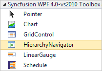
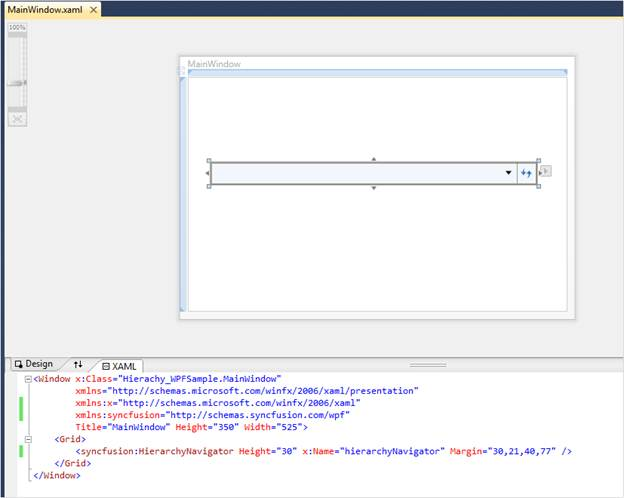

The steps to create a HierarchyNavigator control in a WPF application by using Visual Studio are as follows:
1. Create a new WPF application in Visual Studio.
2. In the Visual Studio Toolbox, click the Syncfusion WPF Toolbox tab, and select HierarchyNavigator.

Figure 555: HierarchyNavigator in Syncfusion WPF Toolbox
3. Drag the HierarchyNavigator to Design View, to add the HierarchyNavigator control.

Figure 556: Control added to Design View
4. On the Properties window, customize the properties of the HierarchyNavigator control.